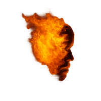

Musica
Un tema emotivo, ripetuto fino a cambiare forma.
La composizione parte da un nucleo semplice e lo lascia evolvere per strati, variazioni e trasformazioni sonore. Quello che resta è una traccia riconoscibile, ma mai ferma.

S2D01Oltre le tracce.
S2D01 è il progetto musicale di Simone Cappelli.
Lavora sulla forma instabile del suono: composizione, sound design, strumenti elettronici e sistemi generativi.
Non un genere. Una presenza.
S2D01 nasce da un percorso musicale lungo e non lineare: ascolti, radio, collaborazioni, studio, teatro, colonne sonore, tecnologia e ricerca personale.
Non segue una mappa già scritta. Tiene insieme frammenti, deviazioni e materiali sonori diversi, fino a trasformarli in un’identità riconoscibile.
Un tema emotivo, ripetuto fino a cambiare forma.
La composizione parte da un nucleo semplice e lo lascia evolvere per strati, variazioni e trasformazioni sonore. Quello che resta è una traccia riconoscibile, ma mai ferma.
Il suono viene trattato come materia viva.
Non serve a decorare il brano, ma a modificarne spazio, peso, profondità e memoria.
Niente viene dato per scontato.
Ogni suono può essere riaperto, spostato, trasformato e riportato altrove.
Il software nato dal lato più generativo di S2D01.
Trasforma materiali audio selezionati in ambienti sonori continui, stratificati e non ripetitivi.
Un engine generativo di sound design per macOS, creato da S2D01.
MOODS trasforma materiali audio selezionati in ambienti sonori continui, stratificati e non ripetitivi.
Non è una playlist, non è un player, non è un jukebox. È uno strumento che porta il suono oltre la forma della traccia.
Brani, stream, mix e canali ufficiali.
S2D01 è il progetto musicale fondato da Simone Cappelli.
Musicista, sound designer e sperimentatore italiano, Simone porta in S2D01 oltre quarant’anni di esperienza nel suono, nella musica e nella tecnologia.
Leggi la bio